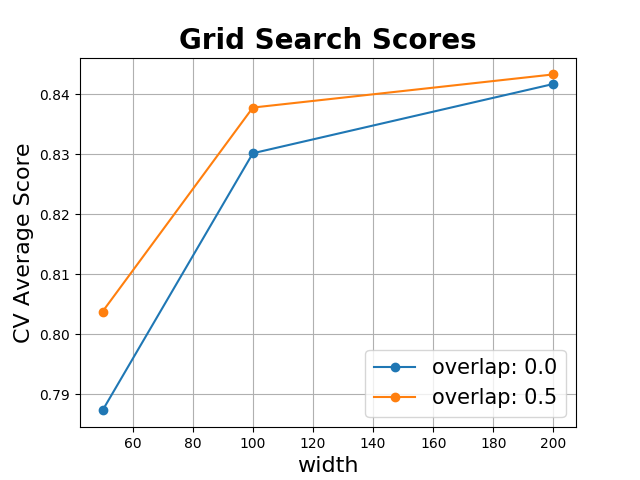

Hyperparameter Selection 1¶
This example demonstrates how to do model selection in a feature representation pipeline using a grid search
# Author: David Burns
# License: BSD
import seglearn as sgl
from sklearn.pipeline import Pipeline
from sklearn.ensemble import RandomForestClassifier
from sklearn.model_selection import GridSearchCV, GroupKFold
from sklearn.preprocessing import StandardScaler
import matplotlib.pyplot as plt
import numpy as np
def plot_grid_search(cv_results, grid_param_1, grid_param_2, name_param_1, name_param_2):
# plotting grid results from David Alvarez on Stack Overflow
# Get Test Scores Mean and std for each grid search
scores_mean = cv_results['mean_test_score']
scores_mean = np.array(scores_mean).reshape(len(grid_param_2),len(grid_param_1))
scores_sd = cv_results['std_test_score']
scores_sd = np.array(scores_sd).reshape(len(grid_param_2),len(grid_param_1))
# Plot Grid search scores
_, ax = plt.subplots(1,1)
# Param1 is the X-axis, Param 2 is represented as a different curve (color line)
for idx, val in enumerate(grid_param_2):
ax.plot(grid_param_1, scores_mean[idx,:], '-o', label= name_param_2 + ': ' + str(val))
ax.set_title("Grid Search Scores", fontsize=20, fontweight='bold')
ax.set_xlabel(name_param_1, fontsize=16)
ax.set_ylabel('CV Average Score', fontsize=16)
ax.legend(loc="best", fontsize=15)
ax.grid('on')
# load the data
data = sgl.load_watch()
X = sgl.make_ts_data(data['X'])
y = data['y']
g = data['subject']
# use subject id to group folds
splitter = GroupKFold(n_splits=3)
cv = splitter.split(X,y,groups = g)
# create a feature representation pipeline
est = Pipeline([('features', sgl.FeatureRep()),
('scaler', StandardScaler()),
('rf', RandomForestClassifier())])
pipe = sgl.SegPipe(est)
# create a parameter dictionary using the SegPipe API - which is similar to the sklearn API
#
# parameters passed to an estimator in the ``feed`` pipeline are keyed ``f$estimator__parameter``
# parameters passed to an estimator in the ``est`` pipeline are keyed ``e$estimator__parameter``
#
# when the ``feed`` or ``est`` pipeline is not a pipeline, but just a single estimator
# the parameter would be keyed f$parameter or e$parameter respectively
#
# note that if you want to set a parameter to a single value, it will still need to be as a list
par_grid = {'s$width' : [50,100,200],
's$overlap' : [0., 0.5],
'rf__n_estimators' : [20]}
clf = GridSearchCV(pipe, par_grid, cv=cv)
clf.fit(X, y)
plot_grid_search(clf.cv_results_, par_grid['s$width'],
par_grid['s$overlap'],'width', 'overlap')
plt.show()
Total running time of the script: ( 0 minutes 21.263 seconds)